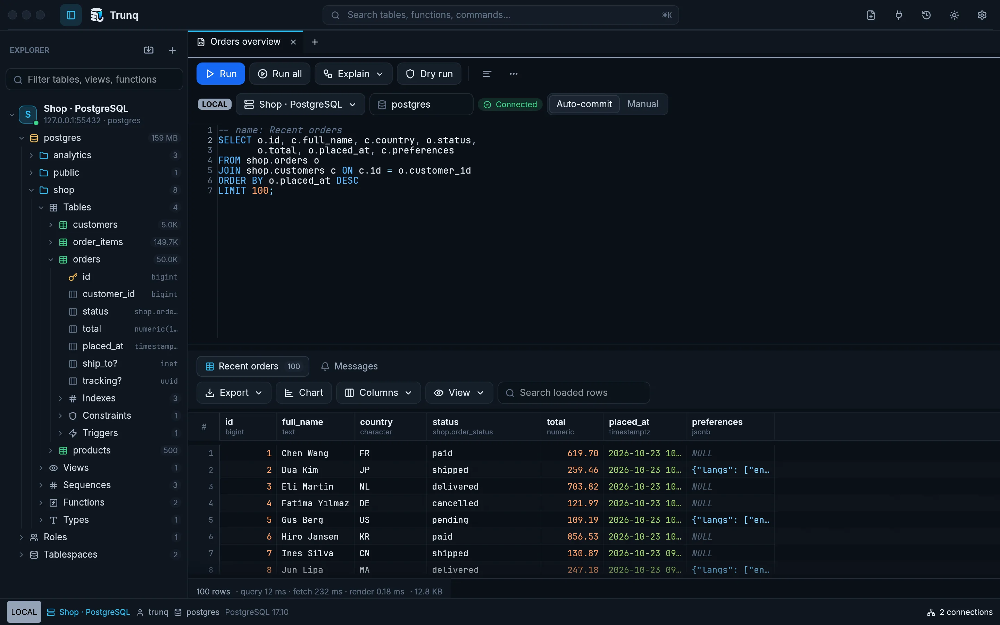
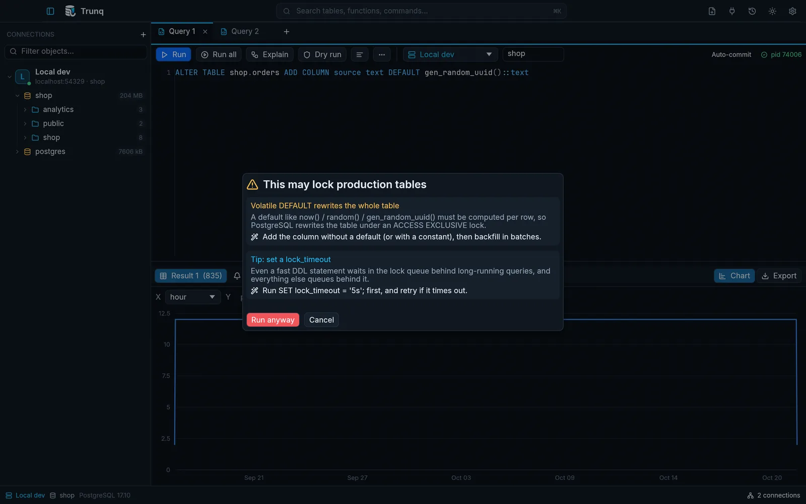
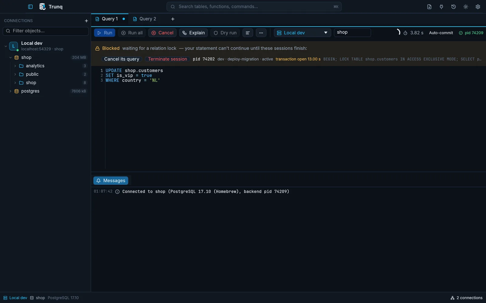
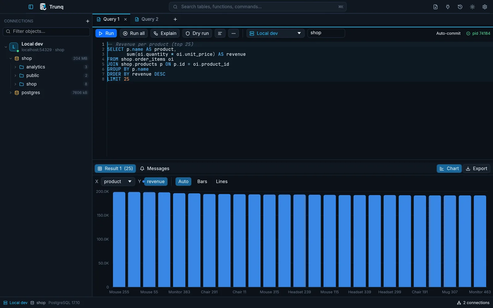
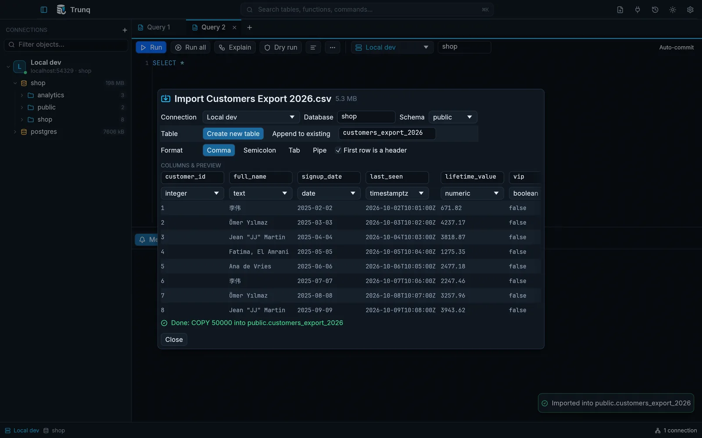
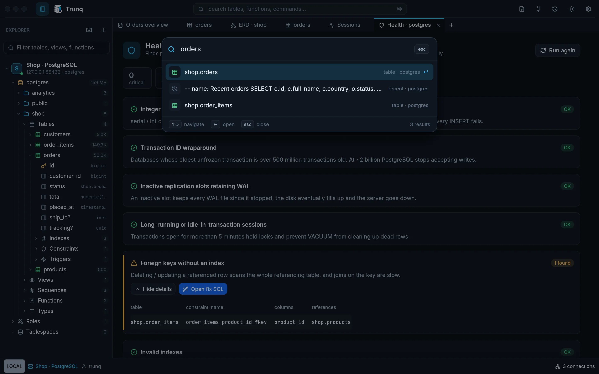

The Postgres app that has your back.
Trunq opens in an instant, glides through millions of rows, and stops risky changes before they reach production. Free, open source, and made for people who'd rather not be paged.

1 2 3 4- Find anythingTables, views and commands, one shortcut away.
- Try before you commitPreview a change, then it's undone for you.
- Never freezesRows keep coming as you scroll, millions of them.
- Know where you areProduction can be red, everywhere, always.
Speed you can feel
A million rows.
Go on, fling it.
This table really has 1,000,000 rows. Scroll it, drag it, or jump straight to the end. The native client fetches results in pages; this browser demo generates its rows locally. Query execution and transfer time depend on your database.
Everything, one app
Pick a card.







See the relationships
Your schema,
connected.
Follow foreign keys across your schema. Open a diagram from a database, schema or table, move things around, and export SVG or Mermaid.
Inspect indexes, constraints, triggers, roles and row security directly in the explorer. Find expensive statements with a ready-to-edit PostgreSQL statistics query.
Native desktop for maximum speed. Optional Docker browser desktop for a portable workspace.

Try it right here
Go ahead,
make a mistake.
Three classic ways to break a live database. Pick one, press Run, and let Trunq catch you. It all runs in your browser, so nothing real gets hurt.
0 of 3 caught. Click a stamp to start.
A Tuesday, without Trunq.
- You open your database tool, then go get coffee while it loads.Trunq is open before your hand leaves the trackpad.
- A big report freezes the app. You force-quit.A million rows scroll like ten.
- Your update hangs. You stare at a spinner and guess.Trunq shows who's blocking you. One click and you're through.
- A "small" change locks the orders table. Checkout goes down.Trunq warns you first and shows the safe way to do it.
- You run a bulk update and hope for the best.You preview exactly what changes, then it's undone automatically.
- The server is full of forgotten connections. Again.Every connection was closed for you when you left.
The fine print
What Trunq costs you.
Nothing. Not your money, not your email, and not your data. It's open source under the MIT license, so you can read every line yourself.
Read the sourceTRUNQ
native app for PostgreSQL
- Price
- $0.00
- Account required
- none
- Tracking
- 0 bytes
- Passwords kept in
- your keychain
- Leaked connections
- 0
- Azure sign-ins
- just once
- Production colour
- red
- Licence
- MIT
TOTAL$0.00
Thank you for not being tracked.
Put it in your dock.
Trunq-<version>-macos-universal.dmg · macOS 11 or newer, Apple Silicon & Intel
Every release lists SHA-256 checksums. Install guide · Build from source